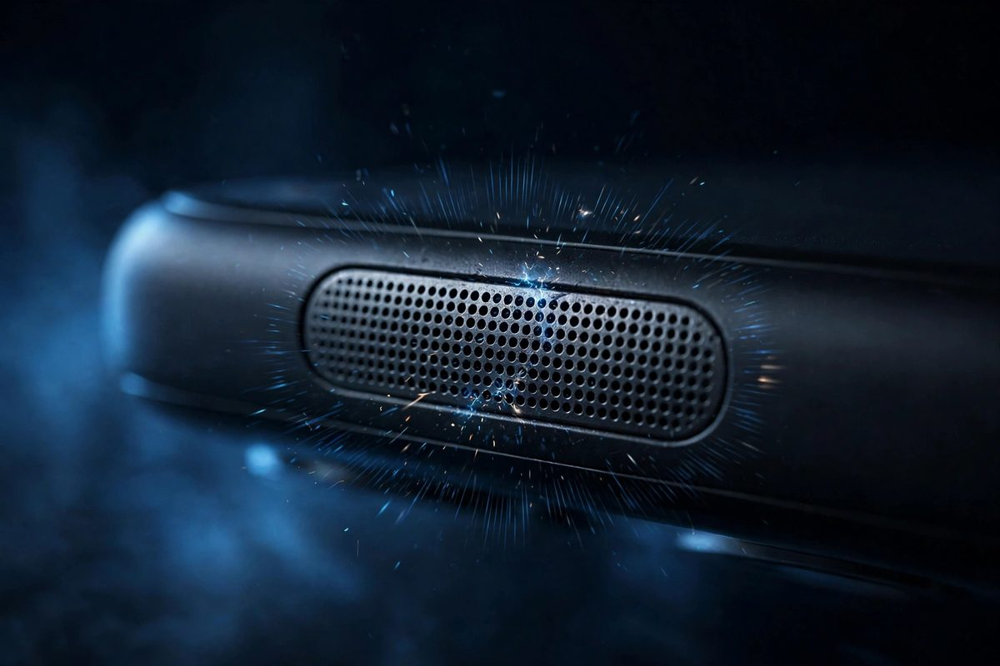

How to Fix a Crackling Phone Speaker

A crackling phone speaker turns every song, video, and call into an irritating experience. The sound may pop, buzz, or break up, especially on bass notes or louder passages. Crackling has several possible causes, ranging from a piece of grit sitting on the speaker cone to a torn membrane or a software fault. The good news is that the cause can usually be narrowed down with a few simple tests, and some cases can be fixed at home. The important thing is to identify the cause before trying to fix it, because the wrong fix can make a damaged speaker worse.
First, Find Out When the Crackling Happens
Start by noticing the pattern. Does the crackling happen at all volumes, or only at maximum volume? Does it happen with every app, or only with one? Does it affect music, calls, or both? These details point to the cause. Crackling that appears only at maximum volume and disappears when you turn the volume down a notch is often just the speaker being pushed to its limit, or a small piece of debris vibrating against the cone. Crackling at all volumes, even quietly, is more likely to be physical damage or a persistent obstruction.
Use our sound test and frequency generator to test systematically. Play a tone at a low volume and raise it gradually, and try different frequencies. If the crackling appears only at certain pitches, something loose inside the speaker chamber may be resonating at those frequencies. If it appears everywhere, the problem is more general. Also try headphones or a Bluetooth speaker: if the same audio crackles there too, the problem is in the audio file or the app, not your phone speaker.
Clean the Speaker Gently
Debris is the most common fixable cause of crackling. A grain of sand, a crumb, or a clump of compacted dust sitting on the speaker cone can vibrate against it and produce exactly the popping and buzzing people describe as crackling. Clean the grille with a soft, dry brush while holding the phone speaker side down, then run a sound sweep with our speaker cleaner to shake loose anything the brush could not reach. Follow the full routine in our guide to safe ways to clean a phone speaker.
After cleaning, test again at several volume levels. If the crackling has reduced or changed character, debris was at least part of the problem, and a second cleaning pass may finish the job. If nothing changes at all, the debris is probably not the cause, or it is trapped behind the grille where home cleaning cannot reach it.
Check Software and Audio Settings
Software can cause crackling too. Equaliser apps, volume boosters, and sound-enhancement features sometimes push the audio signal too hard, which produces distortion that sounds like speaker damage. Turn off any equaliser or sound enhancement in your settings and uninstall any volume booster apps, then test again. Also check whether the crackling started after a system update: a buggy audio driver can cause distortion across all apps, and the fix may be a newer update rather than anything you do to the speaker.
Restart the phone to clear any stuck audio process, and try safe mode to rule out third-party apps. If the crackling disappears in safe mode, an app is interfering with the audio output, and you can remove apps one by one until the sound is clean again. If the crackling is present in safe mode too, the cause is in the system software or the hardware.
When Crackling Means the Speaker Is Damaged
Some crackling cannot be fixed at home, and recognising that early saves time and prevents further damage. A torn speaker cone, a damaged voice coil, or a speaker that has come loose from its housing will all produce crackling or buzzing that cleaning cannot remove. Warning signs include a rattling sound when you shake the phone gently, crackling that gets worse the longer you play audio, sound that cuts in and out when you press on the speaker area, and distortion that is present even at very low volume.
Sound-based cleaning can help dislodge dust and water, but it cannot fix hardware damage, blown speakers, or water-damaged components. If your speaker crackles at every volume after cleaning and software checks, the speaker module is probably damaged and needs replacing. Continued use at high volume can make a torn cone worse and may damage the amplifier circuit, so turn the volume down and book a repair. Our guide on when to visit a repair shop explains what to ask for and what a replacement should cost.
Preventing Crackling in the Future
Once the speaker is fixed or cleaned, a few habits will help keep the crackling away. Avoid playing audio at maximum volume for long periods, especially bass-heavy music, because sustained high volume is the fastest way to wear out a small phone speaker. Keep the phone out of dusty and sandy environments where possible, and clean the grille regularly with a soft brush. Use a case that does not cover the speaker grille, and keep the phone away from water. Small habits like these extend the life of the speaker noticeably, and our guide to best practices to keep your phone speakers clean covers them in more detail.
Frequently Asked Questions
Why does my speaker only crackle on bass-heavy songs?
Bass notes make the speaker cone move the most, so any debris on the cone, a loose part, or a small tear shows up first on bass. Clean the grille gently first. If the crackling stays only on bass after cleaning, the speaker membrane may be damaged.
Can water cause a speaker to crackle?
Yes. Water trapped in the speaker chamber can make the cone move unevenly and produce crackling, buzzing, or muffled sound. Dry the phone, run a sound sweep to eject the water, and let it dry fully. If the crackling remains after a day of drying, the water may have caused internal damage.
Is crackling covered by warranty?
It depends on the cause. A manufacturing defect usually is covered, while damage from drops, water, or poking objects into the grille usually is not. A repair shop or the manufacturer can diagnose the cause before you commit to a repair.